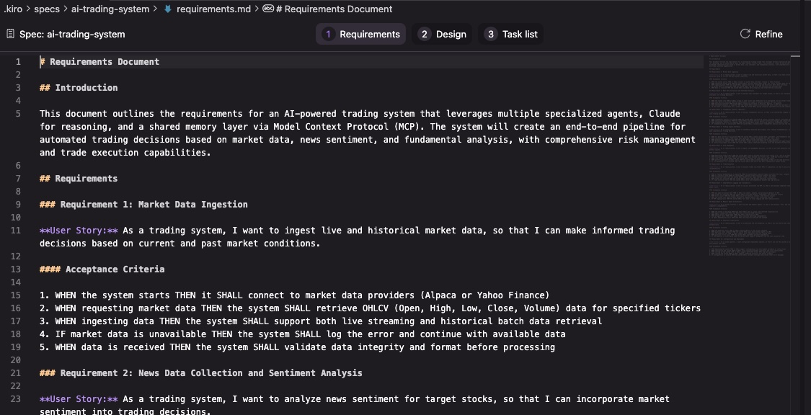
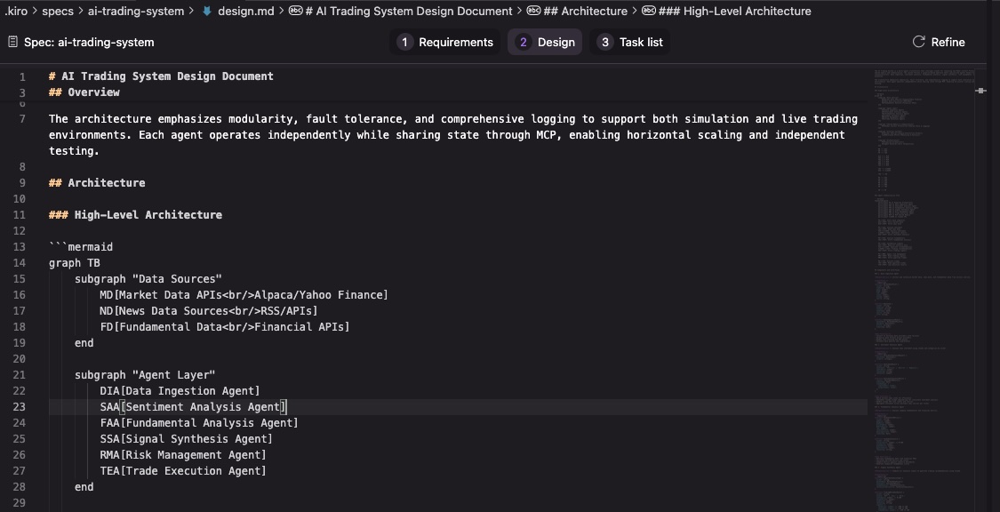
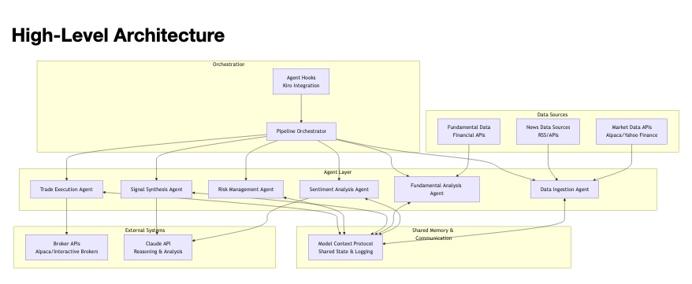

Kiro: Amazon’s Quietly Brilliant Entry into AI-Assisted Coding
As someone who regularly experiments with new AI tooling, I was curious to see how Kiro compares to more established options. I’d been a long-time Cursor user - drawn to its deeper AI integration and workflow support - but recent pricing changes made me reconsider. With Cursor now in murky territory on cost and transparency, I was open to alternatives.
Kiro had just launched, it was free to use during preview, and it promised a more structured, spec - driven development experience powered by Claude Sonnet 4.0 / 3.7. That was more than enough reason to take it for a spin.
I’ve been using Kiro for a couple of days now, and I’ve got thoughts. If you’re curious about what it is, how it works, and whether it’s worth your time, read on.
Why I Tried Kiro: A Cursor Survivor’s Tale
My own AI coding journey started with VS Code and GitHub Copilot. It felt like magic - until it wasn’t. Cursor came next, with its deeper integration of AI and more intelligent workflows. For a while, Cursor became my go - to.
Then came the pricing saga. If you missed it, Cursor recently changed their pricing model (again), resulting in some eye-watering bills and a fair bit of confusion. Like many others, I cancelled my subscription. Suddenly tool-less and curious, I stumbled on Kiro - just launched, free to use during preview, and promising a structured coding experience.
That sounded like a perfect excuse to try something new, learn a few things, and put Kiro through its paces.
What Is Kiro?
At its core, Kiro is a fork of VS Code. It looks and feels exactly like the editor you already know. That’s a good thing. You get access to all your usual extensions, keyboard shortcuts, and workflows.
But Amazon has added something important: the Kiro panel. Think of it as a workflow guide that nudges you into doing three things before you dive into the code:
- Define requirements
- Design your solution
- Execute the build via a task list
Spec Mode: A Breath of Fresh Air
When you first launch Kiro, you’re given a choice between two modes: Vibe Coding and Spec Mode.
- Vibe Coding is like what you get with Cursor or Copilot Chat. You talk to the AI, it responds, you build as you go.
- Spec Mode is the star of the show. It structures your build around well - defined planning steps.
I picked Spec Mode to test a project I’d been meaning to build anyway: a multi-agent trading system using the Model Context Protocol (MCP). I wanted to see if Kiro could help me go from idea to functional scaffold more cleanly than my usual haphazard process.
Spoiler: it did.

Stage 1: Requirements That Actually Make Sense
Before writing any code, I fed Kiro a high-level prompt (partly generated in ChatGPT) describing what I wanted to build. Kiro took this and generated a requirements.md file containing:
- A project intro
- Clear feature descriptions
- Proper user stories
- Given/When/Then acceptance criteria
Anyone with a background in product engineering will feel right at home. It was like having a product manager sitting beside me, translating vague ideas into something buildable. Except it was a Claude-powered AI, and it didn’t need coffee.

Stage 2: Design With Built-In Diagrams
Next came the design.md file. This was Kiro’s suggestion of how to implement the system I had described.
- A multi-agent architecture
- Use of Claude for reasoning
- Inter-agent communication using MCP
- TypeScript for implementation
- Jest for testing
It even rendered architecture diagrams using Mermaid syntax. Thanks to VS Code compatibility, I installed the Markdown Preview Enhanced plugin and viewed these as beautifully formatted visuals right inside Kiro.


Stage 3: Building With a Task List (and Claude Under the Hood)
Then came the build phase. Kiro turned the design into a task list, breaking it into logical steps like:
- Set up project structure
- Define core interfaces
- Implement data fetchers
- Write agent orchestration logic
Each task came with sub-tasks and guidance. As I worked through them, I could mark them complete, which gave a sense of momentum. The interface is clean and motivating - more than I expected, actually. At times it felt like pairing with a senior engineer who’d already done the hard thinking.

Behind the scenes, Kiro uses Claude Sonnet 4.0 / 3.7 for all generation. There’s no model choice (yet), but Claude performed well throughout.
Reflections on the Workflow
What really impressed me about Kiro was the workflow.
Too many AI tools fall into the trap of “magic button” syndrome. You paste a vague prompt and hope for the best. Sometimes it works. Often it doesn’t.
Kiro avoids that by encouraging structured thinking:
- First, clarify what you’re building
- Then, define how it should be built
- Finally, break it down into concrete steps
It’s a subtle shift, but it makes a big difference. The resulting code felt better aligned to the original goals, and I spent less time debugging surprises from the AI.
Limitations I Noticed
A few rough edges remain:
- Git integration is glitchy. The UI sometimes fails to stage or commit changes. I had to fall back to command-line Git.
- No integration with ChatGPT Desktop. Cursor and VS Code let you reflect output directly to ChatGPT. Kiro doesn’t (yet).
- Only Claude is supported. It’d be nice to add OpenAI or Gemini models. But Sonnet is excellent, so not a dealbreaker.
Pricing: Sensible (for Now)
During the preview, Kiro is free to use. I haven’t hit any usage caps yet.
Once out of preview, the pricing tiers will be:
- Pro – $19/month (1,000 interactions)
- Pro Plus – $39/month (3,000 interactions)
It’s unclear how interactions are measured, but it looks simpler and more predictable than Cursor’s current setup.
Final Thoughts: A Thoughtful Tool Worth Your Time
Kiro is polished. It’s opinionated in a good way. And it’s the first AI coding tool I’ve used that truly supports structured thinking.
If you’re already a power user of Cursor, this won’t feel revolutionary. But if you’ve ever found yourself in AI-prompt rabbit holes or building half-baked features that go nowhere, Kiro might be exactly what you need.
And it’s free right now. So go try it before it costs you anything. For my part, I’ll keep using it for structured builds and exploring what else this Claude-powered IDE can do.
Whether the MCP trading bot ever makes a trade - let alone a profit - remains to be seen. But just shaping the idea in Kiro has already been a worthwhile experience.